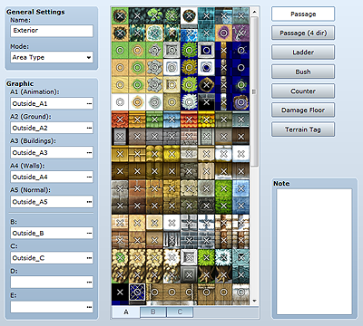
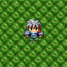
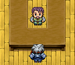

Tileset data defines the tiles used to design a map. You create tilesets by setting how tiles behave in the game, such as whether characters can pass over them.
You can also create tilesets that use images that you yourself have created for use on maps and then use those tilesets by assigning them to map data.
Note that whether a vehicle (such as a boat or ship) can pass over a tile is dependent on its position on the tileset. See Resource Standards for more information.
Airships can pass over all tiles. However, they can only land on locations where characters can walk.

The name of the tileset. This setting is only used by the editor and has no impact on game play.
The purpose of the tileset. This mainly impacts the special specifications of lower-layer tiles and the handling of battle backgrounds.
As a general rule, select Field Type for tilesets representing world maps, including oceans and landmasses, and Area Type for all others.
To use resources created for RPG Maker VX, select VX-Compatible Type.
Set the image files to use for the tiles. Click the ... button in the boxes for each set type (A through E) to display the Tileset Graphics dialog box in which you can specify the files you want to use. When you specify a file, its content will be displayed in the tile list to the right.
Displays images for the tiles set by Graphics. Switch between tilesets by clicking tabs A through E. The A tab displays tiles for the files specified in A1 through A5 in order.
Each tile is displayed with a superimposed mark that shows the editing mode that is currently set for it. You can change the setting by clicking it.
Switches to the editing mode for specifying whether the tile is passable. A circle displayed on the tile list means the tile can be passed through, while an x means it cannot. A star also means a passable tile, but the character will be hidden behind a structure (can only be set for tiles in tabs other than A).
Switches to the editing mode for specifying the direction through which the tile is passable. This setting is supplementary to Passage and is used to make tiles over which movement is possible in specific directions. For example, you could represent a change in elevation by disabling movement past the edge of a cliff tile.
Up, down, left, and right arrows indicating the direction of allowable movement are displayed on the tile list. Movement in a specific direction is only allowed if its corresponding arrow is displayed. Note that if you change the Passage setting, this setting will automatically change.
Switches to the editing mode for ladder settings. Sets a character as looking upward while on this tile. This makes it look as if the character is going up/down a ladder, rope, or other such object.
Turn the setting on/off by clicking the mark on the tile list. Tiles with this setting will have a ladder mark on them.

Switches to the editing mode for bush settings. Applying this setting makes the bottom 8 pixels of a character on the tile invisible, which can make the character's feet look as if they are hidden in a thicket.
However, when set for tiles in A1 through A4, certain images may not turn translucent on some tiles. See Resource Standards for more information.
Turn the setting on/off by clicking the mark on the tile list. Tiles with this setting will have a mark that looks like two wavy lines on them.

Switches to the editing mode for counter settings. Applying this setting enables events to trigger even if the character is not next to the event tile. Use in situations such as the character talking to someone behind a counter.
Note that when this is set for an A2 tile, the bottom will be shifted 8 pixels downward.
Turn the setting on/off by clicking the mark on the tile list. Tiles with this setting will have a rhombus mark on them.
Switches to the editing mode for damage floors. Applying this setting creates a tile that deals damage when passed over. Use it to define a poisonous swamp, a floor that shoots out spikes, or other such dangers.
Turn the setting on/off by clicking the mark on the tile list. Tiles with this setting will have a mark that looks like two triangles on them.
Switches to the editing mode for terrain tags. Terrain tags assign a numeric value between 0 and 7 to tiles. The value can be obtained by using the Get Location Info event command and used to trigger events based on it.
Change setting values by clicking/right-clicking the numbers on the title list. When there are terrain tags where multiple tiles overlap, the value of upper-layer titles with terrain tags set to values other than zero are prioritized when they are obtained by event commands.